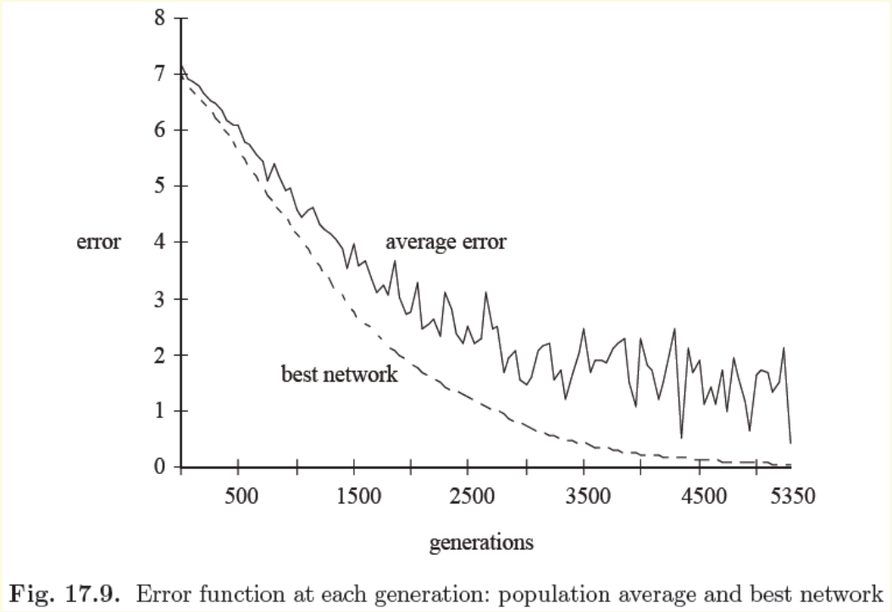

开始之前：本周要学会什么
当候选答案很多、评价好坏的方法已经知道，却难以沿着导数一步步找到答案时，可以同时保留一批候选方案，让它们经历选择、重组和变异。Genetic algorithm（遗传算法，GA）的关键不只是“模拟进化”，而是把现实问题变成能够编码、评价和修改的搜索问题。本周围绕这个主线，先手算一代 GA，再将同一套思路用于移动序列与神经网络参数。
- 区分搜索空间、目标函数、适应度、可行性，以及 Genotype（基因型）和 Phenotype（表现型）。
- 算出小种群的轮盘赌概率，按给定随机数完成选择、单点交叉和变异，并重新评价子代。
- 读懂双点交叉与倒位，解释为什么算子必须与编码含义相容。
- 逐步检查三盘汉诺塔的七步解，指出非法动作，并设计一个注明假设的评价方案。
- 解释 8–3–8 encoder-decoder 的参数如何成为染色体，以及群体平均误差与最优网络误差分别说明什么。
资料边界：本周主资料是 Lecture_slides_full semester.pdf，实际第277–298页，共22页。页序从PDF第一页计数；本段页脚编号为281–302，不能拿它替代实际页序。第278页虽题为 Swarm-Based Search，这里只取其群体搜索的直觉；第299页开始的 Swarm Intelligence 不在本周范围内。
如何读来源：“原资料”指可在相邻页码查回的内容；“教学补充”指为理解而增加的推导、定义细化和自设例题；“经核实的纠正”说明原图与可核对定义的区别。“原实验未说明”不会被教学假设填成原实验事实。公式、图和例题均可离线阅读，无须前几周教材。
评级只衡量本周的学习依赖与应用价值：5/5核心基础，4/5重要方法，3/5理解支撑，2/5局部拓展，1/5背景补充。评级不表示考试概率。例题和图沿用其所属知识块的评级。
一、先把优化问题说清楚
先回答“选什么、怎样算好、什么方案允许出现”，再讨论如何搜索。否则，GA 可能很有效率地优化了一个错误的评分。
Optimization（优化）：目标、空间与局部最优
前置补充；服务于原资料：Lecture_slides_full semester.pdf，实际第277–280页。
Decision variable（决策变量）是要选择的对象，可以是一个数、一串动作，或一组网络权重。Search space（搜索空间）是所有允许算法考虑的候选集合；Feasible set（可行集）是其中满足问题约束的子集。Objective function（目标函数）把候选方案变成一个可比较的数，例如移动次数、误差或收益。
以最小化为例，写成：
这里 x 是一个候选解，𝓧 是搜索空间，𝓕 是可行集，J 是实数值目标，J(x) 越小越好。x 的维度取决于编码；J 的单位取决于任务，例如“步”或平方误差。本书的手算数值例子均采用无量纲数值。
Global optimum（全局最优）不比可行集中的任何候选更差；Local optimum（局部最优）只在指定的邻域内不比邻居差。“邻域”必须先定义：整数问题可以定义为左右相邻整数，二进制串则可以定义为仅一位不同的串。同一个解在一种邻域中是局部最优，在另一种邻域中未必是。
| 候选 x | 0 | 1 | 2 | 3 | 4 | 5 | 6 |
|---|---|---|---|---|---|---|---|
| 成本 J(x) | 4 | 1 | 3 | 5 | 2 | 0 | 2 |
从 x=1 看，左右成本分别是4和3，均高于1，因此它是局部最小值；但 x=5 的成本为0，更低，才是全局最小值。从 x=1 只接受相邻改善的搜索会停住。保留多个起点可以增加探索不同区域的机会，但“面向全局优化”不是“有限代内保证找到全局最优”。
若把 x=1 的邻域扩为所有候选，它还是局部最优吗？
展开讲解答案
不是。新邻域包含 x=5，且 J(5)=0<J(1)=1。局部最优不是只看一个点的分数，还依赖允许比较哪些邻居。
Binary encoding（二进制编码）：一串位如何代表答案
前置补充；对应原资料：Lecture_slides_full semester.pdf，实际第281页。
一个 Bit（二进制位）只取0或1。四位串不是四个无关符号：如果约定左边是高位，1001就表示十进制9。此约定称为解码规则；没有它，看到字符串不能知道它代表参数、动作还是别的东西。
L 是位数，为正整数；bk 是权重为 2k 的一位，b0 是最右位；z 是解码得到的非负整数，范围为0到 2L−1。所有量在本例中无量纲。四位的权重从左到右是8、4、2、1，所以 1001→1×8+0×4+0×2+1×1=9。四位一共能表示16种组合。
假设某参数 x 只能在 [−1,1] 中取值，用四位编码保存整数 z，再均匀映射到这个区间：
a、b 是区间下界和上界（a<b，与位符号 bk不同），Δ 是相邻可表示值的间距，与 x 同单位。取 a=−1、b=1、L=4，Δ=2/15；1001对应 z=9，因此 x=−1+9×2/15=0.2。GA 在这16个网格点里搜索，不是在整个连续区间内搜索。增加位数会提高分辨率，也会扩大编码空间。
一个位的变化不一定意味着现实答案的微小变化。0111是7，1000是8，数值只差1，却有四个位不同。编码会改变“邻近”的含义；这也是编码设计需要和算子一起考虑的原因。
Random sampling（随机抽样）：概率不是固定配额
前置补充；对应原资料：Lecture_slides_full semester.pdf，实际第282–286页。
“以0.3的概率选择 A”表示大量同条件抽样中 A 的频率趋近0.3，不表示每10次必定出现3次。用 Uniform random number（均匀随机数） u∈[0,1) 可以实现抽样：把区间切成长度0.3和0.7的两段，u<0.3时选A，其余选B。长度决定落入机会。
Sampling with replacement（有放回抽样）表示每次选中后，候选仍然留在可选集合中。因此同一个个体可被选中多次；每次都使用相同的概率。如果独立抽 N 次，一个概率为 p 的个体的期望入选次数为 Np，但真实次数是整数，可能为零。
本书后面的随机数均为预先指定的教学抽样结果，便于复算；它们既不是原课件实验随机种子，也不是“每次 GA 必然如此”的步骤。
二、Evolutionary computation（进化计算）如何组织搜索
现在已有候选空间和评分，接着决定：为何一次保留一群候选，以及如何让下一代与评分发生联系。
Population（种群）与 Natural selection（自然选择）的启发
原资料：Lecture_slides_full semester.pdf，实际第277–280页。以下因果解释为教学补充。
Evolutionary computation（进化计算，EC）使用一群候选解反复搜索。一个候选叫 Individual（个体），同一轮的个体集合叫 Population，完成一次更新后得到新的 Generation（代）。这群个体可以不同，也允许存在重复编码。
自然选择提供的启发是：有差异的个体处于同一环境中，某些特征使它们更容易留下后代。搬到优化问题里，“环境”变成任务评价规则，“生存优势”变成较高的选择权重，“遗传”变成复制与重组编码，“变异”变成随机修改。算法借用这些机制，不能据此认为自然进化本身有一个预先指定的全局目标。
第277页将 EC 描述为面向全局或多目标优化的群体随机元启发式方法。Stochastic search（随机搜索）的随机性体现在初始化、选谁、在哪里交叉和变异；Metaheuristic（元启发式）表示可配合不同问题编码与评价函数使用的通用搜索框架。它仍然需要问题知识来定义什么是“好”。
Multi-objective optimization（多目标优化）意味着同时比较多个可能冲突的目标，例如误差与模型大小。第277页只提出这一应用方向，没有给出多目标选择机制；本周手算使用单一标量评分，不把多目标问题直接塞进一个未定义的轮盘赌。
第278页的蜂群图用“群体优于个体”引出集体搜索的直觉。可操作的含义是：保留多个搜索位置，并通过跨代选择利用它们的信息。它不是性能定理；相似个体过多仍会丢失探索机会。第280页提到种群计算可并行：例如给每个候选网络计算误差可以同时进行，但这也意味着每代通常需要多次评价。
Evolutionary algorithms（进化算法）：本周聚焦的位置
原资料：Lecture_slides_full semester.pdf，实际第279页。
课件列出 Evolutionary programming（进化规划）、Evolution strategies（进化策略）、Genetic algorithms（遗传算法）和 Genetic programming（遗传编程）。这里把它们看作进化计算下的不同算法路线即可：它们都借助候选群体和跨代变化，但不代表编码与算子完全相同。只有 GA 在本周资料中得到具体展开，因此不为其余名称追加独立算法章节。
Genetic algorithm（遗传算法）：先评价，再产生变化
原资料：Lecture_slides_full semester.pdf，实际第280–281页。原资料：Lecture_slides_full semester.pdf，实际第294–295页。
GA 先初始化一批候选，然后评价每个候选；评分影响谁被复制进父代池；父代的编码经过交叉、变异等操作成为子代；子代必须重新评价。评分提供方向，随机变化提供新的尝试。只随机改字符串而完全不利用评分，缺少这里的选择机制；只复制最好的字符串而不产生变化，也无法继续探索新的编码。
第280页强调适应度不必连续或可微。这意味着 GA 可以通过“给候选→返回评分”的方式使用一个评价器，而不用求导。它不意味着不需要目标函数，也不意味着总比可求导的专门算法高效。评价一次候选很贵时，一整群、多代评价的代价也会很大。
循环中的第一个设计问题是：候选究竟长什么样？同样一个交叉操作，若编码含义不同，实际效果可能完全不同。
三、Representation（表示）与 Fitness（适应度）：别把四种对象混在一起
Genotype（基因型）与 Phenotype（表现型）
原资料：Lecture_slides_full semester.pdf，实际第281页。原资料：Lecture_slides_full semester.pdf，实际第292页。术语对照与示例为教学补充。
Chromosome（染色体）是代表一个候选方案的编码串。Gene（基因）是串中具有设计含义的基本单元，Locus（基因座）指其位置，Allele（等位值）指该位置可取的值。若一位是一个基因，它的等位值就是0或1；若一个基因是一条汉诺塔动作，它的等位值可来自六种柱间移动。
Genotype 是算法直接保存和修改的表示；Phenotype 是把表示解码后用于解决问题的对象。在整数例子中，1001是基因型，整数9是表现型。在汉诺塔中，一串移动指令是基因型，实际执行产生的状态路径及是否到达目标属于解码后的行为。在网络案例中，位串可解码为权重，权重决定网络的输入输出行为。
| 环节 | 小整数例子 | 汉诺塔例子 | 网络例子 |
|---|---|---|---|
| 基因型 | 四位串 | 动作串 | 参数编码串 |
| 解码结果 | 整数 x | 依次执行的移动与状态 | 权重、偏置及由它们定义的网络 |
| 目标 | 收益尽量大 | 合法地到达目标，尽量少步 | 指定样本上的误差尽量小 |
| 适应度 | 供选择使用的非负权重 | 依据成败、步数和违例构造权重 | 把误差变成越好越大的选择权重 |
编码是设计决定，不是现实对象本身。例如汉诺塔的 02表示“从柱0移到柱2”，不是二进制数，也不是十进制数2。复制一段这样的串，只保留了动作指令，未必保留它在原状态下的作用。
Objective function（目标函数）与 Fitness function（适应度函数）
原资料：Lecture_slides_full semester.pdf，实际第280–282页。转换公式与数值例子为教学补充。
目标函数表达任务想要什么；Fitness function（适应度函数）表达选择算子应当多偏爱这个个体。本书讨论轮盘赌时统一规定：适应度 F 越大，越容易被选中。二者可以相同，也可以通过变换连接。最大化一个非负收益时可直接按收益分配权重；最小化误差时，必须先把“小误差好”转换为“大权重好”。
这是一种教学用转换：Ji 是第 i 个个体的非负、无量纲成本，Fi 是正的无量纲权重。如果成本有物理单位，应先用同单位的正尺度归一化，再加1。成本增大，分母增大，权重减小；J=0 时 F=1，不会发生除以零。
两个方案成本为1和3。转换后适应度为1/2和1/4，归一化的选择概率为 (1/2)/(3/4)=2/3 和 (1/4)/(3/4)=1/3。直接拿成本1和3当轮盘权重，则坏方案反而得到3/4的机会。
若目标是最大化收益，收益为−2、1、4，不能直接把负数放进轮盘。可以在当前种群中做平移：
fi 是要最大化的标量收益，j 遍历当前种群，ε 是与收益同尺度的正数，保证最低者也有正权重。取 ε=1，三个适应度变成1、4、7，概率为1/12、4/12、7/12。收益排序保留了，但概率的相对比例改变了；不能说平移对搜索毫无影响。该平移公式用于最大化收益，不能不改方向就套到最小化成本。
在使用任何转换前，都应检查方向、符号和总和。如果全部权重为零，轮盘赌没有定义；可以事先约定改用均匀抽样，或重新定义权重。若个别权重为零而总和大于零，数学上它的区间宽度为零、入选概率为零。具体库可能要求更严格；例如 DEAP 的 selRoulette 明确警告不要直接用于最小化或非正适应度。
外部核验：DEAP 官方源码文档，selRoulette；这里没有调用该库，零权重情形按下节区间定义解释。
Feasibility（可行性）与 Penalty（惩罚）：评分不能改变规则
原资料：Lecture_slides_full semester.pdf，实际第288–293页。概念区分为教学补充；课件未给出完整惩罚公式。
Feasibility 回答“有没有违反约束”，是规则判断；Penalty 则是让违例在评分中受到不利处理的一种设计。提高某条非法汉诺塔指令的惩罚，不会使它变成合法移动，只会降低算法选择它的机会。
还要分清路径合法与任务完成：一直在两根柱之间来回移动小盘可以每步合法，却永远没把所有盘移到目标柱。若最终目标状态也是约束，这条序列仍不是可行解。编码格式正确、每步动作合法、最终达成目标，是三个不同层次。
处理违例可以采用拒绝、修复，或给较差评分；这些会改变算法搜索到的对象，必须明确约定。修复后评价的是修复过的方案；跳过非法动作后评价的是另一条有效执行路径。课件没有说明采用哪一种，因此本书后面的惩罚例题会把处理规则全部写出。
四、Selection（选择）与 Genetic operators（遗传算子）
这几个操作分工不同：选择决定谁多留下副本，交叉重组已有片段，变异引入位值变化。它们不会自动知道什么修改“有用”；好坏要由下一次评价决定。
Roulette-wheel selection（轮盘赌选择）：按适应度分配区间
原资料：Lecture_slides_full semester.pdf，实际第282页。概率表达与边界约定为教学展开。
第282页的 Reproduction operator（繁殖算子）先求总适应度，再在0到总适应度之间均匀抽一个数，找到累计适应度首次达到它的个体。这相当于把一条线段按每个个体的权重分割：权重越大，区间越长，随机数越容易落入。
N 是种群个体数，i、j 是从1到N的个体索引；Fi≥0 是权重，S>0 是总权重；pi是无量纲选择概率，Ci是累计概率，C0=0，CN=1。因为所有区间拼满整条线段，概率之和等于1。
本书用 u∈[0,1)，选择满足 Ci−1≤u<Ci 的个体，也就是累计值严格大于u的第一个个体。这样边界只归一个区间，零权重也不会在 u=0 时意外入选。原课件使用总权重上的随机数和“≥”比较；连续抽样时单个端点的概率为零，但程序应统一端点约定。
| 个体 | F | p | 累计 C | u 的区间 |
|---|---|---|---|---|
| A | 2 | 0.10 | 0.10 | [0,0.10) |
| B | 4 | 0.20 | 0.30 | [0.10,0.30) |
| C | 6 | 0.30 | 0.60 | [0.30,0.60) |
| D | 8 | 0.40 | 1.00 | [0.60,1.00) |
为产生四个父代副本，可以独立抽四次。有放回意味着 D 可以出现两次、A 一次也没有。选择阶段通常不改基因，它改变的是父代池的组成。N 次抽样中个体 i 的期望次数 Npi不是强制配额。
按上表，u=0.30、0.59、0.60 分别选谁？D 的期望副本数为1.6，为什么实际能为2？
展开讲解答案
依次选 C、C、D。半开区间把0.30归到C，把0.60归到D。期望值1.6是大量四次抽样实验的平均值；本次副本数必须是整数，2完全正常。
Crossover（交叉）：在相同位置交换片段
原资料：Lecture_slides_full semester.pdf，实际第283–285页。
选择之后，把父代池中的两个等长字符串组成一对。Crossover probability（交叉概率） Pc∈[0,1] 决定本次配对是否实施交叉；在本书的教学约定中，抽 r∈[0,1)，若 r<Pc则交叉，否则直接复制两条父串。Pc是一对父母是否交叉的概率，不是每个位独立交换的概率。
Single-point crossover（单点交叉）选一个切分位置，交换其后的尾部。第284页的箭头展示了“链A前段+链B后段”的来源关系；第285页则并排对比单点和双点交叉。
父串 A=11111111，B=00000000。在第3位之后切开，竖线只是切点，不属于染色体：
| 父串 | 子串 | 解释 |
|---|---|---|
| A：111 | 11111 | 111 | 00000 | A的前三位，加B的后五位 |
| B：000 | 00000 | 000 | 11111 | B的前三位，加A的后五位 |
Two-point crossover（双点交叉，课件写 Double-Point）选择两个切点，交换中间段，外侧保持。仍用上述父串，在第2与第6位之后切开：
| 父串 | 子串 | 解释 |
|---|---|---|
| A：11 | 1111 | 11 | 11 | 0000 | 11 | 只用B替换中间四位 |
| B：00 | 0000 | 00 | 00 | 1111 | 00 | 只用A替换中间四位 |
每条子串仍为八位；没有把尾段长度算错，也没有额外添加位。此示例缩短了第285页的全1/全0图，便于看清切点，并非原图逐位抄录。
交叉能创造新的组合，但对这种位置对齐的二进制交叉，如果整个种群某一位置全是0，交叉不能凭空在该位置造出1。两条完全相同的父串，交叉后也仍然相同。新组合可能更好，也可能破坏已有的好组合；第281页“产生更好的群体”应理解为搜索目的，不能理解为每次交叉的保证。
染色体若编码动作或分组参数，切点还会影响语义。跨动作中间切开可能得到新的指令；即使在完整动作边界切开，拼成的动作序列也未必合法。汉诺塔章节会直接检查这种情况。
Mutation（变异）：改变位值，而不是只重新拼接
原资料：Lecture_slides_full semester.pdf，实际第286–287页。逐位概率约定为教学补充。
Bit-flip mutation（位翻转变异）将选中的0改成1，或将1改成0。第286页强调这一操作可注入位层面新的信息。准确说，二进制字母表仍只有0和1，但一个位置上原本缺失的位值可以重新出现。
bk∈{0,1}是被选中位的旧值，b′k是新值；k表示位置。未被选中的位保持不变。本书设每位独立以 Mutation probability（变异概率） Pm翻转：给每个位抽 r，r<Pm时翻转。
例如 0001 的首位翻转后成为 1001，解码值从1变为9。它“随机”，因为该操作没有先问9是否更好。评价会在操作以后进行。
若一代有N条、每条L位，期望翻转位数为 NLPm；N、L是计数，Pm无量纲。期望不是恰好发生的数量。例如4条四位串、Pm=0.05，期望为0.8个位，某次出现0、1或2个都可能。课件强调较低概率，但没有给出适用于所有问题的固定数值，也未统一“按位”还是“按整条染色体”触发的实现细节。
变异过少可能难以恢复丢失的位值；过多则会频繁破坏已经有效的组合。这里解释的是作用和取舍，不把“越小越好”或某个经验参数当成原课件结论。
Inversion（倒位）：先把“反转”说具体
原资料：Lecture_slides_full semester.pdf，实际第287页。经核实的术语辨析；外部定义见下。
在常见的序列算子定义中，Inversion 指选中一段基因后反转其顺序。它不是逐位把0变1。顺序反转保留该片段的元素及数量，只改变位置。
原串写成 1 | 0011 | 0，选择中间四位。
倒位：把 0011从右向左读成1100，结果为1 | 1100 | 0，即111000。但这个例子恰好取反也得到相同片段，不能用它单独区分两种操作。换一个片段更清楚：
1 | 0010 | 1 倒位后为 1 | 0100 | 1，即101001；若逐位取反，则为 1 | 1101 | 1，即111011。前者中间仍有一个1，后者变成三个1。
回看原图，右侧标为“Inversion”的操作会从全1父串中产生0，也会从全0父串中产生1。这与“仅反转片段顺序”不相容：无论怎样重排，全1串仍是全1串。这一矛盾可直接从定义核对。
图中的变化属于位值改变，课件没有进一步定义其“Inversion”规则；无法据此断定教师原意是片段取反还是图示误标。本教材采用明确的顺序倒位定义讲解，并把原图标签含义保留为资料疑点，不猜测一个原实验规则。
外部核验：DEAP 官方 mutation 源码文档，mutInversion，明确反转片段的元素顺序。此链接用于定义核对，不将其实现端点约定当成课件规定。
倒位可视作一种针对顺序的变异，未必每个GA都要使用。动作顺序被倒转后，即使每个动作符号都正确，执行仍可能非法；算子必须服从编码语义。
对 01 | 1010 | 11，只倒位中间片段得到什么？若改为中间逐位取反呢？为什么这个题不能单靠最终串判断用了哪种操作？
展开讲解答案
倒位1010得到0101，结果为01010111；逐位取反1010也得到0101，因此结果相同。这说明某些特定串上两种操作会碰巧一致，必须根据操作定义辨别。可用正文中0010的对照例子检查理解。
五、完整示范：手算一代小种群
本章所有目标、编码、概率、抽样值和替换方式均为教学补充。它们用于走通课件机制，不是汉诺塔或网络实验的原始设置。
One generation（一代演化）：从四条父代到四条子代
教学示例；依据原资料：Lecture_slides_full semester.pdf，实际第281–286页。原资料：Lecture_slides_full semester.pdf，实际第294–295页。
在整数集合 {0,1,…,15} 中最大化 f(x)=x，采用四位无符号二进制编码，适应度 F(x)=x+1。加1保证 x=0 也有正权重。本例无额外约束。种群大小 N=4，Pc=0.8，逐位 Pm=0.05；使用有放回轮盘赌、单点交叉、位翻转变异；不使用倒位或精英保留；生成四条子代后整代替换。
这些约定使过程没有隐藏步骤。若换成保留精英、不同切点或不同随机数，下一代通常会改变。
步骤1：解码并评价初始种群
先把位串解成 x，再计算适应度，不能把字符串的个数或二进制“看起来复杂”当作评分。
| 个体 | 位串 → x | F=x+1 | p=F/20 | 累计概率 |
|---|---|---|---|---|
| A | 0001 → 1 | 2 | 0.10 | 0.10 |
| B | 0011 → 3 | 4 | 0.20 | 0.30 |
| C | 0101 → 5 | 6 | 0.30 | 0.60 |
| D | 0111 → 7 | 8 | 0.40 | 1.00 |
总适应度 2+4+6+8=20；平均适应度20/4=5，当前最大 x=7。全问题的最优值15可以从题设知道，但此刻的种群尚未找到它。
步骤2：按给定随机数选择四个副本
| 抽样 u | 落入区间 | 选中 | 复制到父代池 |
|---|---|---|---|
| 0.12 | [0.10,0.30) | B | 0011 |
| 0.44 | [0.30,0.60) | C | 0101 |
| 0.65 | [0.60,1.00) | D | 0111 |
| 0.93 | [0.60,1.00) | D | 0111 |
父代池为 B、C、D、D。A未被选择，D有两个副本。这一结果不违反A仍有0.10概率。四者期望副本数分别是0.4、0.8、1.2、1.6，本次实际为0、1、1、2。
步骤3：配对并决定交叉
按顺序配为(B,C)、(D,D)。第一对的触发随机数为0.30，小于0.8，故交叉；切点为第2位之后。第二对的触发随机数为0.90，不小于0.8，故直接复制。
| 配对 | 操作 | 交叉后子串 |
|---|---|---|
| B：00|11，C：01|01 | 交换后两位 | 00|01 = 0001；01|11 = 0111 |
| D：0111，D：0111 | 本次不交叉 | 0111；0111 |
第一条子串退化到 x=1，说明交叉不保证每个孩子更好。第二对即使发生交叉，也因父串相同而不会产生新串。
步骤4：逐位判断变异
以下随机数从左到右对应四个位，只有小于0.05的值触发翻转：
| 子串 | 四个位的随机数 | 翻转位置 | 变异后 |
|---|---|---|---|
| 0001 | 0.02，0.61，0.70，0.80 | 第1位：0→1 | 1001 |
| 0111 | 0.40，0.30，0.90，0.70 | 无 | 0111 |
| 0111 | 0.60，0.20，0.50，0.80 | 无 | 0111 |
| 0111 | 0.90，0.70，0.40，0.60 | 无 | 0111 |
这里出现一次翻转。原始种群四条串的首位全为0，选择和位置对齐交叉无法使该位出现1；变异这次做到了。并不是因为算法知道1001更好才翻转，这只是预先指定的随机事件。
步骤5：重新评价，形成下一代
| 新个体 | x | F=x+1 |
|---|---|---|
| 1001 | 9 | 10 |
| 0111 | 7 | 8 |
| 0111 | 7 | 8 |
| 0111 | 7 | 8 |
新总适应度=10+8+8+8=34，平均=34/4=8.5，当前最好 x 从7变为9。若继续下一代，必须按新的总和34重算概率：第一条为10/34=5/17，其余各为8/34=4/17，不能沿用旧概率。
本次确实改善了，但三个相同子串也说明种群多样性降低了。这里只完成一代，没有找到15；不同随机事件甚至可能让当代最佳值下降。一个成功算例不等于GA每代都改进。
若步骤4第一条子串的首位随机数从0.02改成0.52，其余不变，求下一代、平均适应度与当前最优 x。
展开讲解答案
0.52≥0.05，因此不翻转。下一代为0001、0111、0111、0111；适应度为2、8、8、8，总和26，平均6.5；当前最好 x=7。交叉和选择也可改善群体平均，但没有这次位翻转，首位全0的限制仍存在。
GA flow（完整流程）：循环何时结束，最好解放在哪里
原资料：Lecture_slides_full semester.pdf，实际第294–295页。停止条件、记录历史最佳与明确替换步骤为教学补充。
第294页把种群、选择与 Recombination（重组）画成闭环；第295页进一步展示随机初始化→计算每个成员适应度→选择→重组→再次评价。图旁列出 Roulette / Elitist 和 Mutation / Crossover / Inversion，但没有规定必须同时使用所有操作，也没有列出停止条件。
停止可以依据最大代数、评价预算、达到已知目标，或连续若干代没有足够改善。后两项必须定义“目标”和“足够改善”的阈值；停滞不等于已经证明全局最优。对于本书汉诺塔，可以直接检查是否合法到达目标；对于网络，只能在给定误差定义下比较指标。
Elitism（精英保留）与 Diversity（多样性）
原资料：Lecture_slides_full semester.pdf，实际第295页。原图仅列 Elitist；下述明确机制与边界为教学补充。
一种常见的精英保留方式，是把本代若干最好个体原样复制到下一代，并保护它们不被交叉、变异修改。余下位置再由子代填满。若评价确定、目标不变、至少保留一个最佳，则对最大化任务，下一代最好适应度不低于本代最好适应度：因为原来的最佳仍在候选集合中。这个论证只约束最好值，不约束平均值。
Best-so-far（历史最佳）则是另外保存从开始到现在见过的最好候选。即使它不在当代种群中，历史记录也不会变差。这与精英实际进入下一代不同。阅读曲线时要区分“本代最好”和“历史最好”，不能只凭曲线平滑就断定采用了哪一种。
Diversity 指群体中候选的差异。保留许多相同的高分副本可能提高当前平均水平，却减少新的组合。Premature convergence（过早收敛）指尚未找到满意解时，种群已变得过于相似，搜索难以继续改善。增加变异或改变选择力度只是可能的应对，需要根据任务验证；群体规模本身也不能保证有效多样性。
六、Towers of Hanoi（汉诺塔）：编码一条能执行的路径
前面的四位整数总能解码成允许的数。移动序列更难：前一个动作改变状态，后一个动作是否合法就取决于这个新状态。这个案例因此特别适合练习“编码格式正确，不等于方案可行”。
Legal move（合法移动）：每次只操作最上面的盘
原资料：Lecture_slides_full semester.pdf，实际第288–290页。
三根柱上放着大小不同的盘，初始所有盘叠在起始柱，小盘在上、大盘在下。目标是把整叠盘移到目标柱，并保持这种顺序。每次只移动一只盘，只能拿起某柱最上面的盘；目标柱必须为空，或其顶盘比要移动的盘更大。不能移动被压着的盘，也不能把大盘放在小盘上。
为和第292–296页动作编码一致，以下从左到右将柱编号为0、1、2；初始柱为0，目标柱为2。第289页用1、2、3编号，第291页用A、B、C标柱，只是标签不同。以下将盘编号为1、2、3，并令1最小，3最大，不会把盘号与柱号混为一谈。
用 [3,2,1]表示一根柱从底到顶的盘序列。动作 02表示从柱0的顶端取一个盘，放到柱2顶端。执行前需检查柱0非空；设顶盘为d，再检查柱2为空或顶盘大于d。满足条件才改变状态。
左图把起始柱最小盘移到空柱，是合法的。中图试图把较大的顶盘压到另一柱的小盘上，是非法的。右图最小盘位于最右柱，它可以移到任一较大盘上，两种动作都合法。决定合法性的是当前顶盘的大小关系，不是箭头朝左还是朝右。
State graph（状态图）：节点是摆法，边是合法动作
原资料：Lecture_slides_full semester.pdf，实际第291页。状态记法、计数与局部图为教学补充。
一个 State（状态）记录所有盘此刻在哪根柱上。教学中也可写成 (s1,s2,s3)，第d项 sd∈{0,1,2}表示盘d所在的柱。它是三个柱编号组成的向量，不是动作。初态为(0,0,0)，目标为(2,2,2)。同一柱上的盘按大小堆叠，所以给出每盘位置后，合法摆法已确定。
三盘各有三根柱可选，共33=27种这样的状态。这里计数的是摆法，不是所有长度的动作序列。图中一个节点表示一个状态，两节点之间的边表示一次合法移动。若把每一种尝试展开成树，同一个状态可能出现在多条分支中；例如移动最小盘再移回来，就回到原状态。
第291页从初始摆法展开多个分支，并在下方显示目标，说明解是从初态通向目标的路径。它是搜索树的示意，不能据其省略的分支推断完整状态图只含那些节点，也不能据一条画出的路径确认GA如何评分。
Move-sequence encoding（移动序列编码）：逐步检查七步解
原资料：Lecture_slides_full semester.pdf，实际第292–293页。原资料：Lecture_slides_full semester.pdf，实际第296页。状态表为按规则逐步复核的展开。
第292页把解写成 Solution sequence（解序列）：每个位置存一个移动指令，例如 02 | 01 | 21 | 02 | …。前三根柱之间、起点终点不同的指令共有六种：01、02、10、12、20、21。每条指令总是移动起始柱的顶盘，不额外指定盘号；盘号要从当前状态读出。
第293页按图展示了前四步；第296页的 Optimal Solution（最优解）给出了完整七步串：
02 | 01 | 21 | 02 | 10 | 12 | 02
下面每一行都是执行本行指令后的状态。先确认源柱顶盘，再检查目的柱；所有方括号都按底→顶排列。
| 步 | 动作与盘 | 合法性依据 | 柱0 | 柱1 | 柱2 |
|---|---|---|---|---|---|
| 0 | 初态 | 三个盘按大小堆叠 | [3,2,1] | [] | [] |
| 1 | 02，盘1 | 柱2为空 | [3,2] | [] | [1] |
| 2 | 01，盘2 | 柱1为空 | [3] | [2] | [1] |
| 3 | 21，盘1 | 1<2，可以放在盘2上 | [3] | [2,1] | [] |
| 4 | 02，盘3 | 柱2已清空 | [] | [2,1] | [3] |
| 5 | 10，盘1 | 柱0为空 | [1] | [2] | [3] |
| 6 | 12，盘2 | 2<3，可以放在盘3上 | [1] | [] | [3,2] |
| 7 | 02，盘1 | 1<2，可以放在盘2上 | [] | [] | [3,2,1] |
前四步的用意现在清楚了：先把两个小盘搬到柱1，腾出最大盘；第四步才把最大盘移到目标柱。后三步把两个小盘搬到最大盘上。第293与296页的灰色线条用来标示移动盘；局部示意的线宽不足以稳定追踪盘身份，因此这里以规则和逐步状态核对，不从线条宽度反推一次移动中盘大小发生变化。
把开头从02 | 01改成02 | 02。第一步后柱0顶盘是盘2，柱2顶盘是盘1；第二次02试图把2放在1上，因为2>1，所以非法。问题并非“02这种基因不好”，因为它在第一步和第四步本来都合法；问题是相同指令遇到的状态不同。
执行正确序列的前四步后，12、20、02各能否立即执行？分别移动哪只盘？
展开讲解答案
此时柱0为空，柱1为[2,1]，柱2为[3]。12合法，移动柱1顶盘1到盘3上；20合法，把盘3移到空柱0，虽然它会把已取得的进展撤回；02非法，因为柱0为空。合法不等于有助于达成目标。
Optimal path（最短路径）：为什么三盘至少需要七步
原资料：Lecture_slides_full semester.pdf，实际第296页。最少步数论证为教学补充，不是GA找到全局最优的一般证明。
七步合法只能证明“找到一个解”；要叫最短，还需证明不可能更短。设 T(n) 是三柱、n盘、整叠从一柱移到另一柱的最少移动数。在移动最大盘之前，必须先把上面的n−1盘移开并叠到剩下的一根柱上；最大盘进入目标柱后，还得把n−1盘搬到它上面。
因此至少需要两次小规模搬运和一次最大盘移动。按这个次序递归操作又确实可行，所以这个下界能够达到：
n 是非负整数盘数，T(n)以“移动步数”为单位；公式只适用于这里的三柱标准规则。逐次算：T(1)=1，T(2)=2×1+1=3，T(3)=2×3+1=7。也可验证若 T(n−1)=2n−1−1，代入即得2(2n−1−1)+1=2n−1。
因此课件的七步串恰好达到最短步数。第289页写“n（例如60）”是问题描述中的举例，第296页画出的仍是三盘结果，不是完成了60盘GA实验。第296页也没有代数、成功率或运行时间；不要从“Optimization Process”标题推导这些未给出的结果。
Encoding design（编码设计）：把汉诺塔接入GA
原资料：Lecture_slides_full semester.pdf，实际第292–296页。以下实现方案全部为教学补充，不声称复现原实验。
原课件给出了动作序列、一般GA循环和七步结果，但没有完整交代序列长度、适应度与非法动作处理。为了把机制讲实，下面另设一个完整的小评价方案。设每条染色体固定有 L=7 个动作基因，每个来自上述六种动作；从初态模拟，遇到首个非法动作立即停止；若提前达成目标，也立即停止；否则执行完七个位置再评价。
此时编码空间有67=279936条字符串，其中许多不能合法执行。L是动作基因数量，不是位数。第292页的 Move 0…N−1 只说明序列位置，没有给出那个N的具体值；本例的L=7是借已知三盘最短长度做的教学设定。
记录 U：是否遇到非法动作（遇到为1，否则0）；r：停止时未在目标柱2的盘数；ℓ：实际成功执行的合法步数。定义：
这是无量纲组合成本：100、10、1是人为选择的权重，分别用于惩罚非法、剩余盘和步数；F为正的选择权重。对本例 U∈{0,1}、0≤r≤3、0≤ℓ≤7，非法项100大于其余项最大值37；少一只未到位盘可降低10，超过全部步数差最多7。因此评分先强烈排斥非法，再鼓励到达目标，最后比较步数。换盘数或长度后必须重新审查这些比例，不能照抄。
| 教学候选 | 执行结果 | (U,r,ℓ) | J 与 F |
|---|---|---|---|
| S：02 01 21 02 10 12 02 | 合法到达目标 | (0,0,7) | J=7，F=1/8 |
| Q：02 02 01 02 10 12 02 | 第2条非法，停止在第1步后 | (1,2,1) | J=100+20+1=121，F=1/122 |
| R：02 20 02 20 02 20 02 | 来回移动小盘，未完成任务 | (0,2,7) | J=20+7=27，F=1/28 |
S比R好，R比Q好；但 R 的每步合法仍不等于它满足终点约束。本书用明确的终点检查判断是否成功，不能仅凭F比较大宣布成功。这种r的设计也只是粗略距离：有时合法求解需要暂时把盘移离目标柱，r可能暂时变差，评分不应被误当成真实最短剩余距离。
交叉后的动作仍需重新执行
将S与R在第3个动作之后单点交叉。取S的前三项与R的后四项，得到 02 01 21 | 20 02 20 02。S的前三步执行后，柱2已为空；接来的20立即非法。两个父串都能逐步合法执行，却不保证拼接出的孩子合法。原因是R的后缀原本假定进入它时柱2有盘，新的前缀改变了这个条件。
若把S前三项直接倒位为 21 01 02，第一条21又会尝试从空的柱2取盘。只在完整动作边界操作能保证语法完整，不能保证路径合法。若把六种动作进一步编码成三位二进制，八种码字还会多出两个未使用值；它们如何处理也需要另外定义，课件未规定。
汉诺塔告诉我们，GA的通用循环之外，真正决定结果的是解码器和评价器。下一节只替换这两部分：染色体改为网络参数，评价改为网络输出误差。
七、Encoder-decoder design（编码器—解码器设计）：用GA搜索网络参数
本节中的“编码器”是一个前馈神经网络的功能部分；它与GA把参数变成染色体的“编码”处在两个层次。先看清网络输入输出，再讨论如何搜索它的参数。
Multilayer perceptron（多层感知机，MLP）的最小回顾
前置补充；course_files_export/Nature1986.pdf，实际第1–2页用于核对分层网络、权重、目标输出与误差；仅回顾结构和误差。
MLP由 Input layer（输入层）、Hidden layer（隐藏层）与 Output layer（输出层）构成。输入沿连接前向传递，每个非输入单元先把输入乘相应的 Weight（权重）再相加，加上 Bias（偏置），经过 Activation function（激活函数）得到输出。隐藏层把输入变成中间表示，输出层用这个表示完成任务。
网络的结构规定有哪些连接；参数规定连接强弱。固定结构下，同一个输入遇到不同参数会得到不同输出。训练就是寻找让输出接近目标的参数。第3周常见的误差学习方式可以用梯度；本周只需保留“前向计算输出→与目标比较→得到误差”的部分，再让GA负责参数搜索。
8-bit encoder-decoder（八位编码器—解码器）：读懂8–3–8结构
原资料：Lecture_slides_full semester.pdf，实际第297页。输入模式、激活函数与偏置未由本页完整规定；下述解释区分图示事实与教学假设。
第297页原图有8个输入 x1到x8、3个隐藏单元、8个输出单元，前后相邻层之间画有全连接。输入到隐藏层完成 Encoder（编码器）的映射，隐藏层到输出层完成 Decoder（解码器）的映射；中间较窄的层称为 Bottleneck（瓶颈）。它是本课程的8–3–8前馈网络案例，不是现代Transformer序列模型。
为说明“编码后再解码”，可以自设输入为八个 One-hot pattern（独热模式）：每个输入只有一个分量为1，其余为0，例如(1,0,0,0,0,0,0,0)；令目标输出等于输入。这时网络学会经三个中间单元重建输入。八种模式在信息计数上可用三个二进制位区分，因为23=8；但中间神经元是否采用严格二值输出，课件本页没有规定。
八个输入位若可任意组合，共有28=256种模式；只有三个严格二值的隐藏位只有8种编码，不可能一一保留这256种输入。图名“8-bit encoder-decoder”本身不能证明它无损重建所有八位串。独热数据集是本书的教学假设，不能写成原实验已给出的训练集；连续隐藏值也不能简单等同为三个二进制位。
Parameter encoding（参数编码）：一条染色体是一整套网络参数
原资料：Lecture_slides_full semester.pdf，实际第280–281页。原资料：Lecture_slides_full semester.pdf，实际第297页。以下参数化、取值区间、精度和激活函数均为教学补充。
先固定8–3–8结构，GA只搜索连接权重及选定的偏置。用矩阵W保存输入→隐藏权重，V保存隐藏→输出权重。对一个样本，可按以下公式前向计算：
x有8个输入分量，h有3个隐藏输出，ŷ有8个预测输出；i=1,…,8，j=1,…,3，k=1,…,8。W的维度为3×8，Wji连接输入i到隐藏j；V为8×3，Vkj连接隐藏j到输出k；b为3维隐藏偏置，c为8维输出偏置。这里特征和参数按无量纲数值处理。
教学中选择 Sigmoid（逻辑S形函数）作为σ：
z是一个单元的加权和加偏置，取实数；e是自然常数。该函数把实数映射到(0,1)，其中σ(0)=1/2。此选择便于演示0/1目标的重建误差，不代表第297页明确指定了Sigmoid。
按固定顺序把W的24个数、b的3个数、V的24个数和c的8个数排成一个59维参数向量θ。若不使用偏置，连接权重只有8×3+3×8=48个。第297页没有画出偏置，因此“59”是本教学模型的参数数目，不能当成原实验已确认的染色体长度。
每个参数限在[−1,1]，用四位映射表示，解码规则沿用第一章。一个参数的片段1001表示0.2；59个参数共占59×4=236位。染色体首先被切成59段，每段解码成一个参数，再按约定顺序放回W、b、V、c。位串长度236、参数个数59、隐藏单元数3，分别是三个不同的量。
这种粗精度和窄取值范围只用来演示编码，不声称足够达到课件曲线所示误差。也可以另设实数向量直接保存参数，但算子必须随表示改变，不能对实数元素机械套用0/1翻转。
一个GA个体对应一整套网络参数。种群中有N个个体，就有N个候选网络参数方案；不是把8个输入神经元当作8个GA个体。网络的隐藏表示h由输入x和参数共同决定，也不是染色体θ。
GA循环因而变为：随机生成多套参数→每套参数运行网络得到误差→把误差转换成适应度→选择参数编码→交叉和变异→再运行新网络。这里的“学习”发生在GA更新参数候选时；前向计算只是评价一个候选，自己不会修改权重。无需从该例推断GA还搜索了拓扑或神经元数量。
Reconstruction error（重建误差）：网络好坏怎样变成一个数
原资料：Lecture_slides_full semester.pdf，实际第297–298页。原图未定义误差公式；下面采用教学MSE。平方误差概念核对：Nature1986.pdf，实际第2页，式(3)；本书归一化与该文总和式不同。
给定M个样本，让每个候选网络在同一组输入与同一评价规则下运行，才能公平比较。为自设的重建任务定义 Mean squared error（均方误差，MSE）：
θ是整套参数；m是样本编号，上标(m)表示第m个样本、不是幂；k是输出分量编号。xk(m)是目标，因为本教学任务要求重建输入；ŷk(m)是该参数网络算出的输出，依赖θ。M>0，分母8M是总共比较的标量数量。E是非负标量，单位为输出单位的平方，本例无量纲。若所有输出与目标完全相等，每项平方为0，E=0。
所有权重和偏置都为0，则隐藏单元加权和为0、输出为0.5；输出层加权和仍为0，因此八个输出也都为0.5。对任意一个独热样本，目标为1的那一项误差平方是(0.5−1)²=0.25，其他七项各为(0.5−0)²=0.25。单样本平方和为8×0.25=2。
取八个独热样本，M=8，总平方和=8×2=16，E=16/(8×8)=0.25。若为轮盘赌另设F=1/(1+E)，则F=1/1.25=0.8。这里0.8是选择权重，不是80%准确率。
若某个候选在一个输入上的正确位置输出0.9、其余七个位置输出0.1，该输入的八项误差平方均为0.01，单样本MSE为0.01。但只知道这一个输入，不能断定整个样本集的E也为0.01，更不能据此判定整个网络一定优于另一候选。
第298页的纵轴可能采用不同的误差聚合方式；原页只写error，没有给出求和、平均、缩放或数据集的完整定义。本书的MSE不能用来反推出原曲线数值，也不能把原图接近7的误差解释成这里取值范围内的MSE。
Learning curve（学习曲线）：群体平均与最优网络分别怎么看
原资料：Lecture_slides_full semester.pdf，实际第298页。统计符号、读图边界与比较例子为教学补充。

先看轴，再看线。横轴 generations（代数）表示GA更新种群的次数，末端标到5350；它不是秒数，也不是单个网络看过样本的次数。纵轴 error（误差）越低越好；原图没有定义其单位或归一化。实线标为 average error，虚线标为 best network，二者不能解读成“训练误差与测试误差”。
若用Ei(t)表示第t代第i个网络在同一规则下的误差，则种群平均和当代最好误差可以定义为：
N>0为种群网络数，t为代索引，i为网络索引，上标(t)不表示乘方。平均、最小值与每个网络误差同单位。先在样本集上得到每个网络的E，再在网络之间求平均；这是两个不同的聚合层次。最小值不大于均值，是由数字大小直接保证的，不是GA特有性质。
图中能确认的趋势：两条曲线早期都从约7附近向下；群体平均总体降低，但后期有明显上下波动；最优网络曲线继续降到接近横轴，通常低于平均曲线。原图分辨率与缺少原始数据决定了这些读数只能作趋势描述，不能声称某一代精确达到零误差。
平均误差波动与每代生成不同质量的子代相容：有好孩子，也会有坏孩子，即使最好个体仍被保留，平均值也可能升高。但原图没有提供机制对照实验，不能由波动反推出某个具体变异率。最优曲线近似不增，可能与精英保留或历史最佳记录相容；原图未说明 best network 究竟指当代还是历史最佳，不能据曲线外观确定实现。
某代三个网络误差为0.2、1.0、1.2，平均为2.4/3=0.8，最好为0.2。下一代误差变成0.1、1.4、1.5，平均为3.0/3=1.0，最好为0.1。最好网络改善了，群体平均却升高了，两者完全可以同时发生。
图不能证明的事：不能证明所有网络都已学会任务，不能证明测试集泛化良好，不能证明得到全局最优，不能据5350这个末端值推出所有运行都在该代收敛。缺少重复运行结果、数据划分与误差定义，也不能用它断定GA优于其他训练方法。
有人说：“虚线近零说明全体网络都重建正确，而且GA在第5350代保证找到全局最优。”指出其中的错误。
展开讲解答案
虚线只对应best network，不代表全体，群体水平应另看实线；“接近零”不是精确零，且原误差定义、数据集与记录方式未知；图展示一个过程，不能变成对任意运行或全局最优性的保证。最多说图中最优网络按该图的评价指标有明显改善。
八、综合练习：把机制迁移到稍有变化的问题
先尝试写出条件与中间步骤，再展开答案。题目均为教学补充；所需方法已在正文示范。
练习A｜Fitness scaling（适应度缩放）与轮盘赌
教学练习；对应第三至第五章。
三个候选的无量纲成本为0、1、3。使用 F=1/(1+J)，求适应度、选择概率、累计概率；按区间左闭右开，u=0.55、0.60、0.90分别选择谁？
展开讲解答案
适应度分别为1、1/2、1/4，总和为7/4。概率为4/7、2/7、1/7，累计为4/7≈0.5714、6/7≈0.8571、1。三个区间为[0,4/7)、[4/7,6/7)、[6/7,1)。0.55选第一个，0.60选第二个，0.90选第三个。较差解仍有非零概率，这与概率偏好一致。
两个候选的适应度为1和3；给两者都加100。排序是否改变？轮盘赌概率是否改变？
展开讲解答案
排序不变。原概率为1/4和3/4；平移后为101/204≈0.4951和103/204≈0.5049，差距明显变小。加常数保留优劣次序，却改变相对选择力度。因此处理负值时也要意识到缩放会影响搜索。
练习B｜Crossover and mutation（交叉与变异）的追踪
教学练习；对应第四、第五章。
两父串为 1010 与 0101，已决定在第1位之后单点交叉。之后只翻转第一条子串的第4位。给出两条最终子串及其十进制值。
展开讲解答案
先拆为1|010与0|101。交换尾部后第一条为1|101=1101，第二条为0|010=0010。再将第一条第4位1翻成0，得1100，十进制12；第二条保持0010，十进制2。切点与变异位置是不同的参数，不能把“第1位之后交叉”误当成“只交换第1位”。
一个四位种群中每条串的第2位都是1。只做选择和本章定义的单点/双点交叉，下一代该位可能为0吗？加上顺序倒位后还一定保持1吗？
展开讲解答案
选择和位置对齐交叉只能从父代同一位置继承位值，因此不可能出现0。顺序倒位会移动不同位置上的位，若被反转片段中含其他位置的0，它可能移到第2位，所以“这一位置固定不变”的论证不再适用。这也说明正文对交叉性质的限定不能随意扩大到所有算子。
练习C｜Application design（应用设计）中的证据边界
教学练习；对应第六、第七章。
按第六章自设方案，候选以01 | 01开头，后五项任意。求停在哪一步、U、r、ℓ、J和F。
展开讲解答案
第一步01把盘1从柱0移到柱1，合法。第二步又01，将试图把盘2放到盘1上，非法，立即停止。目标柱2仍为空，所以三盘都未到目标：U=1、r=3、ℓ=1。J=100×1+10×3+1=131，F=1/132。后五项不会被执行，不能继续幻想它们修复已经停止的路径。
保持8–3–8全连接结构，含隐藏与输出偏置。若每个参数改用6位编码，有多少参数、多少染色体位？这能否说明原课件使用该长度？
展开讲解答案
权重8×3+3×8=48个；偏置3+8=11个，共59个。每参数6位，所以长度59×6=354位。改变精度没有改变网络节点数或参数数目。这个长度来自题设，不是原课件实验设置；原图没有给出每参数编码位数，也未明确偏置是否参与搜索。
两个网络在同一评估集上误差为0.05和0.10。能说第一个训练用时更少吗？能说它在所有输入上都更好或已经全局最优吗？
展开讲解答案
都不能。这个比较只说明第一个在指定数据与误差定义下的指标更低。时间需要计时或评价次数证据；每个输入都更好需要逐样本比较；全局最优需要更强证明。平均误差较低可能仍包含局部较差的样本表现。
完成这些练习后，可用同一串问题自查一个新GA应用：个体是什么？如何解码？目标方向是什么？怎样保证选择权重有效？哪些约束由解码器检查？算子修改了什么？停止与最优记录如何定义？这正是从“记住GA流程”走向“能设计并解释GA”的能力。
来源索引与资料限制
本次先递归盘点 资料根目录 及子目录，再筛选本周内容。盘点时有22个候选文件，另有2个系统元数据文件；没有发现课堂转录、音视频或压缩包。文件存在与已经用于教学是两件事：下表说明实际用途，未采用文件不作为本周结论依据。
| 文件或文件组 | 本次处理与使用边界 |
|---|---|
| Lecture_slides_full semester.pdf | 324页；本周完整阅读实际277–298页的文字和全部原页图像。全书仅作相关性筛查，主线不扩展到其他周。 |
| course_files_export/CS5486-2026.pdf | 2页课程说明；仅确认课程范围，不以考核比例推测本周考试概率。 |
| course_files_export/Nature1986.pdf | 阅读并核对实际1–2页中神经网络文章的结构、权重与误差说明；只用于MLP必要回顾。未把其反向传播实验当成GA案例。 |
| course_files_export/ASSPM-Lippmann1987.pdf | 19页神经网络综述；文本与扫描图页筛查，相关MLP基础重复，无本周独有GA细节，未另扩展。 |
| course_files_export/CS-Broomhead-Lowe1988.pdf | 35页；内容为RBF插值、相关矩阵分析与数值研究，本周未采用。 |
| course_files_export/TLU.pdf | 21页；阈值逻辑单元与逻辑实现，本周未采用。 |
| course_files_export/Tutorials/Tutorial 1.pdf | 39页；AI概览与历史，筛查后未发现GA专题，不采用无关的历史或时效性表述。 |
| course_files_export/Tutorials/Tutorial 2- M-P neuron.pdf | 36页；M-P neuron与逻辑门，无GA专题。 |
| course_files_export/Tutorials/Perceptron_Adaline.pdf | 18页；文字与图像筛查，内容为Perceptron、Adaline、XOR，无GA专题。 |
| course_files_export/Tutorials/Tutorial 7 - SVM and LS-SVM_1.pdf | 21页；SVM与LS-SVM及MATLAB练习，无GA专题。 |
| CS5486-12周教材生成提示词.txt；CS5486-Week01-学习教材.html 至 CS5486-Week10-学习教材.html | 分别为提示词及10份已生成教材；按要求排除，不作为独立事实来源，未修改。 |
| .writer.lock；两处 .DS_Store | 空工具锁文件与系统元数据，排除。提取文本、渲染图与核验脚本仅为本次工作中间产物。 |
本周自然主题与实际页序：
| 实际页序 | 可靠内容与教材去向 |
|---|---|
| 277–280 | EC、群体搜索直觉、算法家族、GA特性 → 第一、二章；278页不扩成PSO内容。 |
| 281–282 | 编码与算子概览、轮盘赌 → 第三、四章；第五章为自设完整计算。 |
| 283–285 | 交叉原理、单点与双点原图 → 第四章的完整操作示范。 |
| 286–287 | 变异、倒位标签辨析 → 第四章；Inversion原图不作顺序倒位的可靠算例。 |
| 288–291 | 汉诺塔规则、合法动作与搜索树 → 第六章前半。 |
| 292–293 | 移动编码与对应状态 → 第六章逐步状态核验。 |
| 294–295 | GA操作闭环、评价—选择—重组流程 → 第二章、第五章；终止规则另标教学补充。 |
| 296 | 三盘七步Optimal Solution → 第六章验证合法性与最短步数；无代际统计。 |
| 297 | 8–3–8网络连接结构 → 第七章；参数化及数据集设定另标教学补充。 |
| 298 | 平均误差、最优网络误差随代数变化图 → 第七章读图，至此结束本周。 |
核验与补充的边界：外部仅使用 DEAP 官方 mutation 源码文档核对顺序倒位，使用 DEAP 官方 selRoulette 源码文档核对轮盘赌前提。它们不是本课程原实验记录。二进制、概率、七步最短性和教学算例的数字则通过定义、推导与逐步复算核验。
- 汉诺塔：缺少完整适应度函数、非法动作处理方式、原实验染色体长度、种群规模、交叉/变异参数及停止条件；没有报告运行代数、耗时、成功率或重复实验统计。第296页仅显示三盘七步路径。
- 网络：缺少输入/目标样本集、激活函数、偏置安排、权重范围与精度、参数编码方式、种群规模、遗传算子参数、误差定义及数据划分；best network的当代/历史记录口径也未明确。
- 算子图：第287页“Inversion”标签与顺序倒位定义不相容。可确认位值发生改变，无法确认课件欲规定的具体算子；本教材不猜测其意图。第293、296页盘线宽的示意不作为盘身份依据。
因此本教材完成了这些页的可靠内容教学与例题验证，没有声称复现原课件实验。本书自设参数与公式可供练习理解，不能拿来补写原实验的方法说明。
交付内容仅限第11周：GA及汉诺塔、encoder-decoder两个应用。图表、公式和样式内嵌于本HTML；本地来源链接需与原资料目录一起保留，外部核验链接联网时可打开。